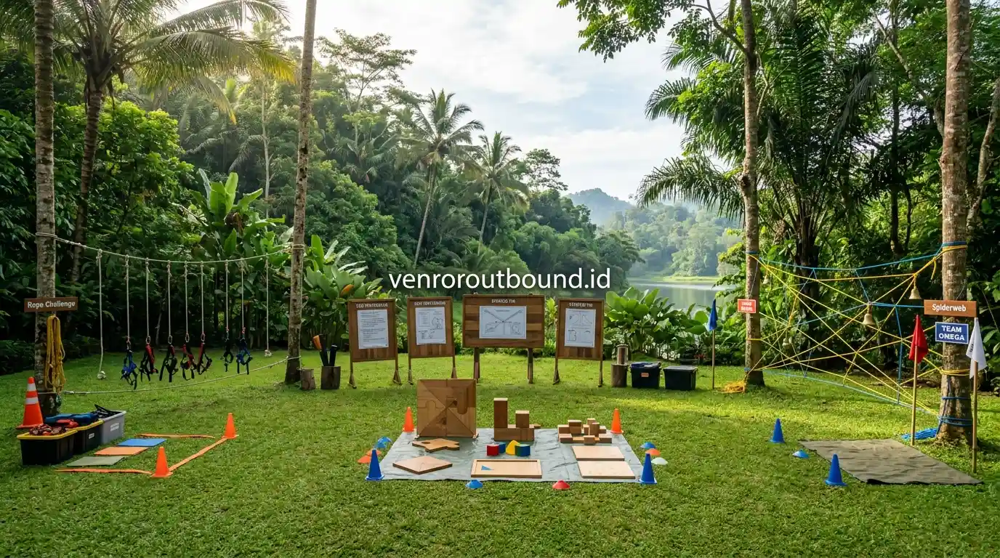

1. Apa Itu Metode Experiential Learning dalam Pelatihan Outbound?
Jawaban singkat: Experiential learning merupakan metode pembelajaran berbasis pengalaman langsung. Dalam program outbound team building, peserta melakukan serangkaian aktivitas terstruktur, merefleksikan proses yang terjadi, lalu menghubungkannya dengan situasi kerja nyata agar pembelajaran menjadi lebih kontekstual, bermakna, dan mampu memperkuat sinergi organisasi.
Banyak organisasi dan praktisi Human Resources (HR) kerap menghadapi kenyataan bahwa program pelatihan di dalam ruangan sering kali hanya menghasilkan penyerapan materi yang pasif. Karyawan mendengarkan paparan teori kepemimpinan dan kerja sama, namun kesulitan menerapkannya saat berhadapan dengan tekanan beban kerja harian.
Pendekatan experiential learning (pembelajaran berbasis pengalaman) hadir untuk menjembatani jurang tersebut. Di alam terbuka, peserta dihadapkan pada skenario nyata yang menuntut tindakan fisik, interaksi emosional, dan pengambilan keputusan cepat. Proses belajar terjadi bukan karena instruktur mendikte teori, melainkan karena peserta mengalami sendiri konsekuensi dari komunikasi yang tidak efektif atau keputusan yang tergesa-gesa.

Dampak Komunikasi Tim yang Buruk Terhadap Produktivitas & Solusinya
Analisis hambatan komunikasi antardivisi dan metode mengikis ego sektoral melalui simulasi outbound.
2. Siklus Do, Reflect, Apply: Mengubah Pengalaman Menjadi Wawasan Kerja
Merujuk pada model pembelajaran eksperiensial yang dikembangkan oleh David Kolb, proses pembentukan wawasan baru selalu berjalan melalui siklus terpadu:
- DO (Mengalami Secara Langsung): Peserta ditempatkan dalam simulasi tantangan kelompok dengan sumber daya dan batas waktu tertentu. Setiap individu harus mengambil peran dan berkontribusi langsung menyelesaikan masalah.
- REFLECT (Mengevaluasi & Merefleksikan): Setelah simulasi selesai, fasilitator mengajak kelompok duduk bersama untuk meninjau kembali apa yang terjadi. Mengapa strategi awal gagal? Siapa yang berinisiatif memimpin? Bagaimana respon anggota tim saat terjadi kebuntuan ide?
- APPLY (Menerapkan ke Konteks Pekerjaan): Peserta merumuskan hubungan antara kejadian di permainan dengan situasi kerja nyata di kantor, lalu menyepakati komitmen perilaku baru yang akan dipraktikkan dalam kolaborasi harian.
Tanpa tahapan Reflect dan Apply, kegiatan luar ruang hanya akan berhenti sebagai rekreasi bermain biasa tanpa memberikan dampak transformasi perilaku pada kinerja tim.

Sesi debriefing luar ruang tempat fasilitator memandu peserta menggali makna di balik simulasi dan merumuskan rencana aksi.
3. Contoh Penerapan Modul pada Teamwork, Komunikasi, dan Leadership
Berikut adalah bagaimana prinsip experiential learning diimplementasikan ke dalam modul-modul tematik di lapangan:
- Simulasi Kerjasama Tim (Teamwork): Modul penyusunan balok raksasa dengan tali pengendali jarak jauh. Peserta menyadari bahwa tarikan tali yang terlalu kuat oleh satu orang dapat meruntuhkan seluruh struktur, menggambarkan betapa krusialnya sinkronisasi ritme kerja.
- Simulasi Komunikasi Efektif: Permainan navigasi buta (*blindfolded maze*), di mana pemandu harus memberikan instruksi yang presisi dan ringkas. Peserta belajar pentingnya konfirmasi pemahaman (*active listening*) dan menghindari multitafsir.
- Simulasi Kepemimpinan & Pengambilan Keputusan: Tantangan manajemen krisis dengan skenario dinamis. Pemimpin tim dilatih untuk mendelegasikan tugas berdasarkan kekuatan masing-masing anggota tanpa kehilangan fokus pada sasaran utama.

Game Outbound Kreatif untuk Karyawan: Ide Modul dan Variasi Permainan
Kumpulan simulasi kreatif tanpa alat rumit yang efektif menyegarkan motivasi dan kebersamaan tim.
4. Peran Kritis Fasilitator dalam Sesi Debriefing
Fasilitator bertindak sebagai katalisator pembelajaran. Alih-alih memberikan kuliah satu arah, fasilitator mengajukan pertanyaan-pertanyaan terbuka yang mendorong kesadaran diri (*self-discovery*) peserta:
- "Saat waktu tersisa 3 menit tadi, apa yang membuat suasana tim tiba-tiba menjadi panik?"
- "Bagaimana perasaan rekan-rekan ketika usulan perbaikan strategi tidak didengarkan oleh pemimpin kelompok?"
- "Apakah ada analogi dari hambatan tadi yang mirip dengan alur koordinasi proyek antar-departemen di perusahaan kita?"
Proses fasilitasi yang matang memastikan bahwa kesimpulan dan solusi lahir dari pemikiran peserta sendiri, sehingga komitmen perbaikan terasa lebih autentik dan memiliki rasa kepemilikan (*sense of ownership*) yang kuat.

Kesalahan Umum dalam Mengadakan Team Building Kantor dan Solusinya
Panduan menghindari jebakan formalitas outbound yang tidak berdampak pada budaya kerja.
5. Panduan HR & L&D Menentukan Tujuan dan Mengukur Keberhasilan
Agar investasi program pelatihan memberikan nilai tambah nyata bagi perusahaan, tim People Development disarankan menerapkan kerangka evaluasi terpadu:
- Training Needs Analysis (TNA): Petakan terlebih dahulu isu utama di tim. Apakah masalahnya ada pada ego sektoral antardivisi, rendahnya inisiatif, atau resistensi terhadap perubahan struktur kerja?
- Penyelarasan Nilai Budaya (Core Values Alignment): Pastikan provider merancang alur cerita simulasi yang mengintegrasikan nilai-nilai inti perusahaan.
- Evaluasi Pasca-Kegiatan (Kirkpatrick Model): Lakukan survei reaksi langsung pasca-acara (Level 1), ulas lembar komitmen kelompok (Level 2), dan pantau perubahan perilaku koordinasi di tempat kerja dalam kurun waktu 30 hingga 60 hari setelah kegiatan (Level 3).
6. Kesimpulan
Penerapan metode experiential learning mentransformasikan kegiatan outbound dari sekadar agenda liburan menjadi instrumen pengembangan kapasitas SDM yang terarah dan berkelanjutan. Dengan perancangan modul yang sistematis, fasilitasi debriefing yang tajam, dan pemantauan tindak lanjut yang konsisten, organisasi dapat membangun tim kerja yang tangguh, komunikatif, dan selaras menuju pencapaian target bisnis.
Rancang Program L&D Berbasis Experiential Learning
Rancang program L&D berbasis experiential learning yang relevan dengan kebutuhan tim Anda. Hubungi Vendor Outbound melalui WhatsApp +62 82211221909 untuk mendiskusikan konsep acara, estimasi biaya, dan opsi venue terbaik.
Hubungi Kami via WhatsAppPertanyaan Sering Diajukan (FAQ)
Experiential learning adalah metode pembelajaran berbasis pengalaman langsung di mana peserta melakukan aktivitas terstruktur, merefleksikan proses yang terjadi, dan mengaitkan wawasan tersebut dengan tantangan nyata di lingkungan kerja.
Experiential learning dapat efektif untuk senior manager apabila aktivitas, tingkat tantangan, konteks masalah, dan sesi refleksi disesuaikan dengan pengalaman serta tujuan pembelajaran peserta. Aktivitas sebaiknya tidak dibuat terlalu sederhana dan harus memiliki relevansi terhadap tantangan kepemimpinan strategis atau pengambilan keputusan.
Debriefing adalah jembatan yang mengubah permainan fisik menjadi wawasan kerja. Tanpa debriefing yang dipandu fasilitator kompeten, aktivitas outbound hanya akan dinilai sebagai hiburan fisik sesaat tanpa ada transfer pengetahuan ke dunia kerja.
Keberhasilan dapat diukur secara kualitatif melalui lembar refleksi individu, observasi perilaku pasca-kegiatan, survei kepuasan pelatihan, serta evaluasi perubahan dinamika komunikasi antardivisi dalam periode 1 hingga 3 bulan setelah kegiatan.

Arby Ardiansyah
Arby Ardiansyah merupakan penulis dan konsultan di Vendor Outbound yang berfokus pada desain kurikulum experiential learning, mitigasi risiko kegiatan outdoor, dan pengembangan kompetensi SDM korporat.